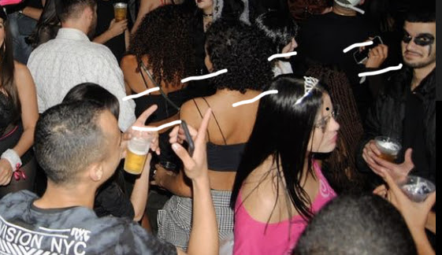

Quem conhece o Wagner melhor?
QUEM CONHECE MELHOR O WAGNER
Quem conhece o Wagner melhor é um de seus melhores amigos
chamado William, e o Wagner é quem conhece melhor ele também.
É uma amizade que está de pé desde antes do ensino médio,
muitas tretas ao decorrer dos anos mas sempre unidos novamente
pela força da amizade.
Veja abaixo uma foto deles em uma festa na Mansão Deluxe:
